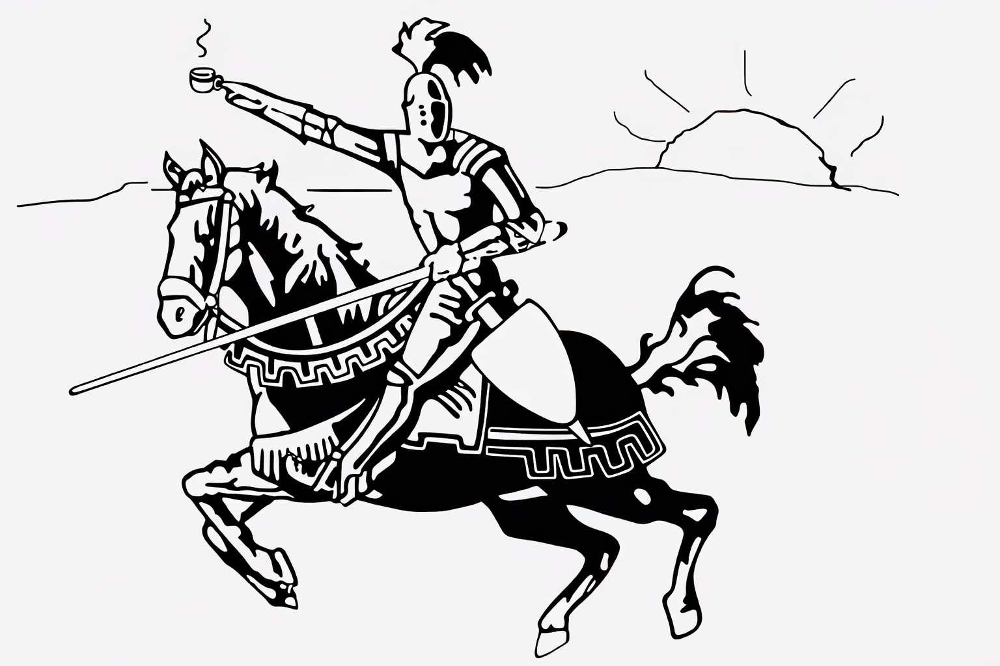

TOASTMASTERS CLUB
Endwell, New York | Chartered December 1, 1972

For more than five decades, Morning Knights Toastmasters Club has helped individuals in the Southern Tier grow as communicators, leaders, and lifelong learners. Since its founding in 1972, the club has provided a welcoming environment where members can build confidence, sharpen speaking skills, and support one another in reaching personal and professional goals.
The club's name dates back to its founding in 1972, when members met in the mornings at King Arthur's Restaurant in Endicott, New York. Drawing from both the meeting time and location, "Morning Knights" became a name with a distinctive sense of place and tradition. More than five decades later, that history still reflects the club's spirit of dedication, fellowship, and growth.